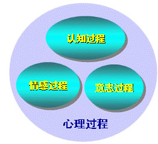
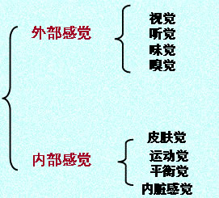
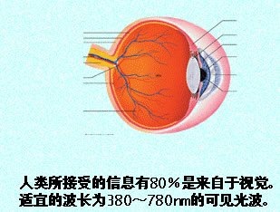
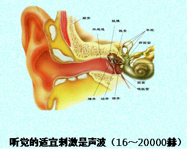
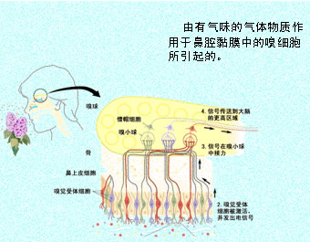
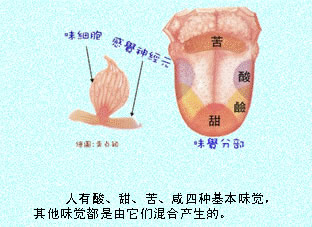
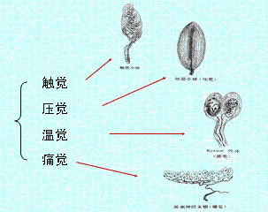
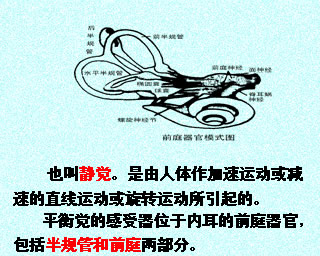
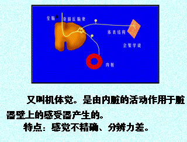

00:00
第三节 感觉和知觉（重点）

第一单元 感觉
一、定义
1.是人脑对直接作用于感觉器官的客观事物的个别属性的反映。
2.感觉为人们提供了内外环境的信息；
3.感觉保证了机体与环境的信息平衡。
03:34
二、种类

（一）视觉

05:57
（二）听觉

（三）嗅觉

06:51
（四）味觉

（五）皮肤觉

08:35
（六）运动觉
反映身体各部分的位置、运动及肌肉的紧张程度。
感受器位于肌肉组织、肌腱、韧带各关节中。
（七）平衡觉

09:47
（八）内脏觉

三、特征
（一）感受性(人)和感觉阈限（刺激） 反比关系（E=1/R）
感受性（能力）————————— 感觉阈限（量）
绝对感受性 ————————— 绝对感觉阈限
差别感受性 ————————— 差别感觉阈限
（二）感觉后像
（三）感觉的适应(sensory adaptation)
由于刺激物对感受器的持续作用使感受性发生变化（感受性提高或降低)的现象，就是感觉的适应。
22:00
（四）感觉对比(sensory contrast)
同一感觉器官由于不同刺激物的作用，会使感觉在强度上和性质上发生变化，这种现象叫做感觉对比（同时对比和先后对比）。
（五）联觉(synesthesia)
当一种感觉器官受到刺激而产生一种特定感觉的同时又产生另外一种不同的感觉。
（六）感觉补偿(sensory compensation)
当人们的某种感觉缺失后，其他的感觉会高度发展起来弥补其缺失的感觉功能，这种现象叫做感觉补偿。
第二单元 知觉
一、定义
是人脑对直接作用于感觉器官的客观事物的整体属性的反映。
二、种类
根据知觉反映的客观事物的特性的不同：
空间知觉：对物体的形状、大小、远近、方位等空间特性的知觉。
时间知觉：对客观事物的顺序性和延续性的反映。
运动知觉：个体对物体空间移动以及移动速度的反映。
37:27
三、特性
（一）知觉的选择性
（二）知觉的整体性
1.知觉系统具有把感觉到的个别特征、个别属性整合为整体的功能，这就叫知觉的整体性。
2.知觉的整体性的规律 ： 接近律 、相似律 、连续律 、封闭律。
（三）知觉的理解性
在知觉事物时，不仅依赖于当前的信息，还要根据自己过去的知识经验来理解它，给它赋予一定的意义。
（四）知觉的恒常性
是指在一定的范围内，当知觉的条件或对象发生变化的时候，而知觉的映象仍保持不变的特性。
四、错觉（illusion）
错觉是在客观事物刺激作用下产生的对刺激的主观歪曲的知觉，是不正确的知觉。